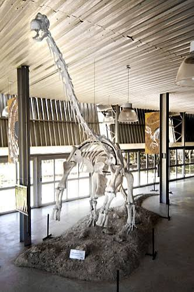
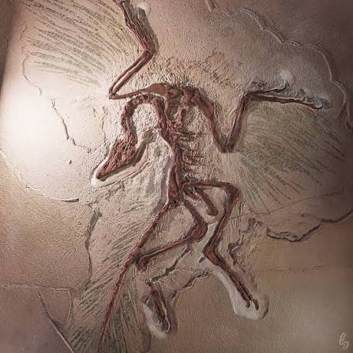

Fóssil de crânio de T. rex. Acervo Paleontológico, .
O Tyrannosaurus rex foi um dos maiores predadores terrestres da história, habitando a América do Norte no final do período Cretáceo. Sua mordida exercia uma força estimada em mais de cinco toneladas, capaz de triturar ossos.
Catalogado originalmente em por Henry Fairfield Osborn.
Uberabatitan ribeiroi

Reconstrução de titanossauro encontrado em Peirópolis, Uberaba (MG).
Descoberto no sítio paleontológico de Peirópolis, em Uberaba (MG), o Uberabatitan ribeiroi é o maior dinossauro já descrito no Brasil, chegando a ultrapassar 26 metros de comprimento.
Espécie descrita formalmente em .
Archaeopteryx lithographica

Espécime de Berlim preservado em calcário litográfico.
Considerado um fóssil de transição fundamental, o Archaeopteryx apresentava características de répteis terópodes — como dentes e cauda óssea — combinadas com penas assimétricas adaptadas ao voo.
Primeiro esqueleto completo encontrado em , na Alemanha.
Linha do Tempo da Era Mesozoica
Principais períodos geológicos e dinossauros característicos